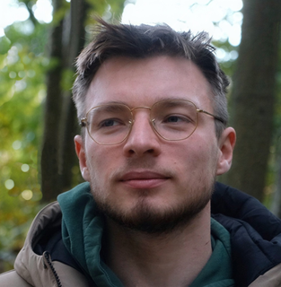
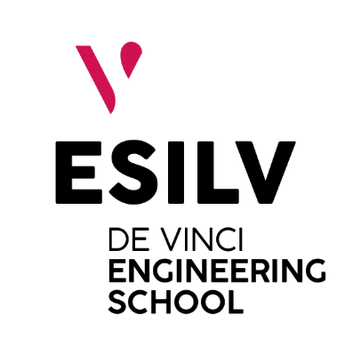
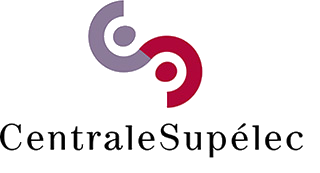
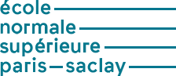
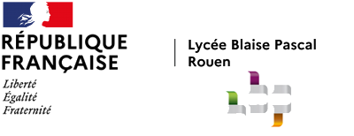

Louen Pottier
AI Research Engineer · Scientific ML, Physics & 3D Vision
Research engineer at the intersection of physics and deep learning. Graduate of ENS Paris-Saclay, I have been working for three years at CEA designing neural network architectures for real-time physical simulation in virtual reality. My work has led to several scientific publications and a patent filing. In parallel, I work as a freelance data scientist across a broad range of industries and teach as a part-time lecturer at ESILV. I enjoy exploring new fields and finding unexpected connections with my past work.
Not actively looking, but always happy to discuss new opportunities (permanent positions, freelance, teaching, scientific collaborations...)
Experience
Research Engineer
Design of neural network architectures for physical simulation and model reduction applied to virtual reality (physics-informed NNs, surrogate models, world models, Gaussian Splatting). One patent filed and several scientific publications. Industrial consulting: finite element simulation substitution for Renault (crash test, GNN) and Forvia (AI for design optimization).
Independent Consulting
Freelance data science missions for private clients across diverse sectors. Projects ranged from NLP and automatic patent drafting to AI for physical simulation and indoor geolocation. One mission led to a peer-reviewed publication; others resulted in innovative models deployed in production.

ESILVPart-time Lecturer
Teaching fluid mechanics, thermodynamics, and partial differential equations to engineering students at Bachelor and MSc level. Courses delivered in both French and English.
Skills
Machine Learning & SciML
PINNs · Surrogate Models · Representation Learning · 3D/4D Gaussian Splatting
Model Deployment
PyTorch · C++ · ONNX · TorchScript · Libtorch · Docker
LLM & NLP
Transformers · RAG · Fine-tuning
Physics & Simulation
FEniCS · Cast3M · Ansys
Languages
French (native) · English C1 - Cambridge English Qualification
Education

CentraleSupélecM.Sc. - Mechanical Simulation of Structures & Coupled Systems
Specialisation in computational mechanics, finite element methods, and coupled multiphysics systems, with coursework in AI for physical simulation.

ENS Paris-SaclayDiploma in Artificial Intelligence
Selective internal programme at ENS Paris-Saclay. Second year: research internship at EDF R&D, co-supervised by Centre Borelli (ENS AI research lab), with coursework from the MVA master's programme. Work presented at a NeurIPS workshop.
M.Sc. - Mechanics of Materials and Structures
Nonlinear mechanics, damage and fracture, continuum mechanics, and numerical methods. Simultaneously followed the first year of the ENS AI diploma (selective internal programme).
B.Sc. - Mathematics, Physics & Engineering Sciences
Intensive undergraduate curriculum in mathematics, physics, and engineering sciences at ENS Paris-Saclay (SAPHIRE programme).

Lycée Blaise-PascalClasse Préparatoire aux Grandes Écoles
Intensive two-year preparatory programme in mathematics, physics, and engineering sciences.